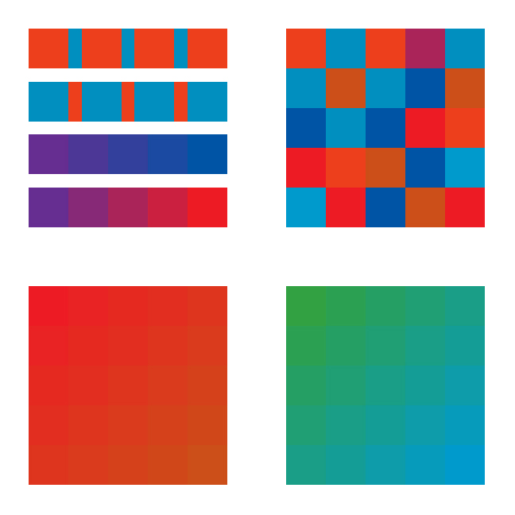
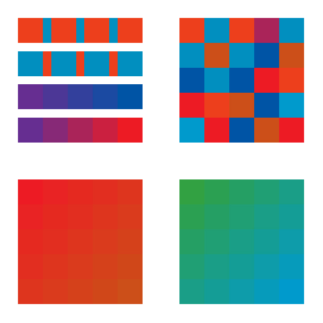
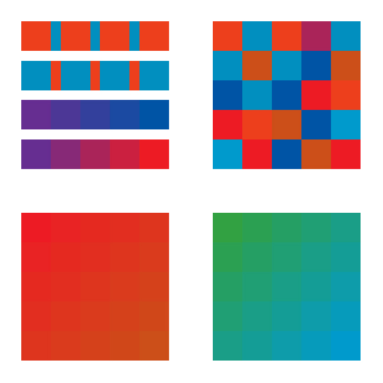

@2025 Abby Jacobs
 

Fundamentals of Graphic Design
The Fundamentals of Graphic Design is a compilation of design projects from the course of a semester. The compilation took the form of a hand-bound series of three books containing color boards, story boards, and a typographic facsimile. The sections of the book are labelled as COLOR, COMM, and BOOK.
COLOR
COLOR is an experiment in color theory exploring hue, value, saturation, temperature, and complements.

COMM
COMM focuses on visual storytelling. How can we use minimal shapes to tell a narrative? Convey emotion? An assortment of children's tales, songs, and poems were chosen to create the storyboards below.


The far left story is based on the song "Leave A Light On" by Chris Renzema, the inner left is The Lion and The Mouse from Aesop's Fables, the inner right is "A Bird is a Thing With Feathers" by Emily Dickinson, and the far right is "Midday Sun" by lighthearted.
BOOK
BOOK was made up of two central elements: the facsimile below, and the final, printed book with each work. The facsimile below is based off of pages 38 and 39 of Bringhurst's The Elements of Typographic Style.